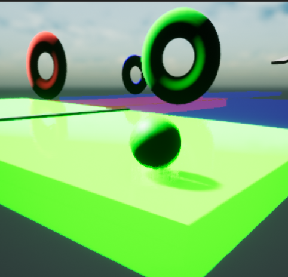

Ryan Joseph Gehrlein 
Chlorophyll

Summary:
Fillball is a small, self-driven game project developed in Unreal Engine 4. The player controls a ball that can change between 4 colors by collecting small color pickups, passing through colored hoops, or pressing colored buttons. Changing the ball's color changes which paths are solid and passable; the player must strategically manage their current color, particularly if they wish to collect every color pickup. Through this project, I am learning how to program game behaviour and systems using C++, and I am familiarizing myself with the many features of UE4. Right now, 3 levels are planned for this project.
Accomplishments:
- Fillball is a small, self-driven game project developed in Unreal Engine 4. The player controls a ball that can change between 4 colors by collecting small color pickups, passing through colored hoops, or pressing colored buttons. Changing the ball's color changes which paths are solid and passable; the player must strategically manage their current color, particularly if they wish to collect every color pickup. Through this project, I am learning how to program game behaviour and systems using C++, and I am familiarizing myself with the many features of UE4. Right now, 3 levels are planned for this project.
- Designed & implemented color-switching system in C++.
- Streamlined development by utilizing C++ objects and scripts within other Blueprint components, reducing compile times and allowing for speedy debugging.
- Created simple and aesthetically pleasing graphics by utilizing Unreal's flexible material editor.
Technology Used:
- Game built in Unreal Engine.
- Code written in C++ using Visual Studio.
- Some graphics assets made using GIMP.